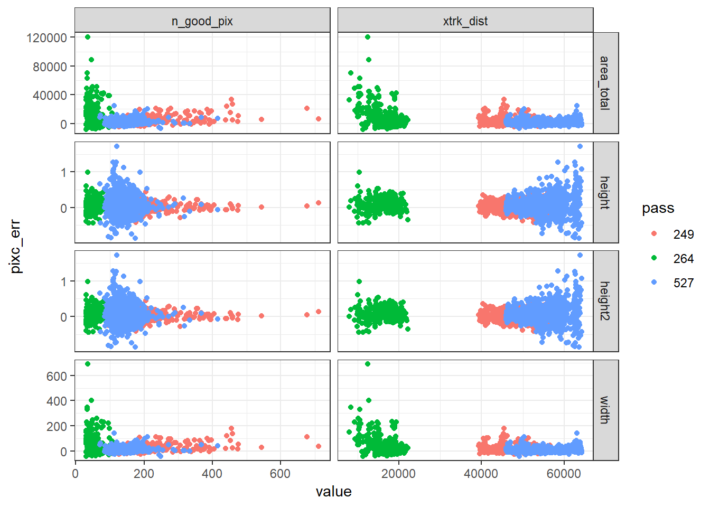
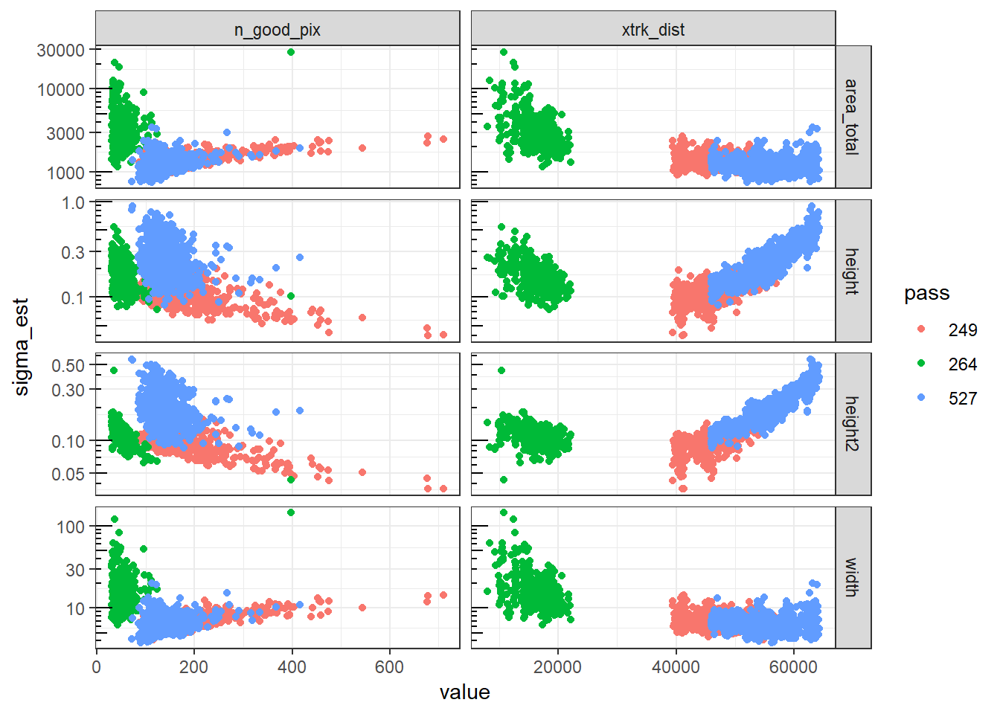
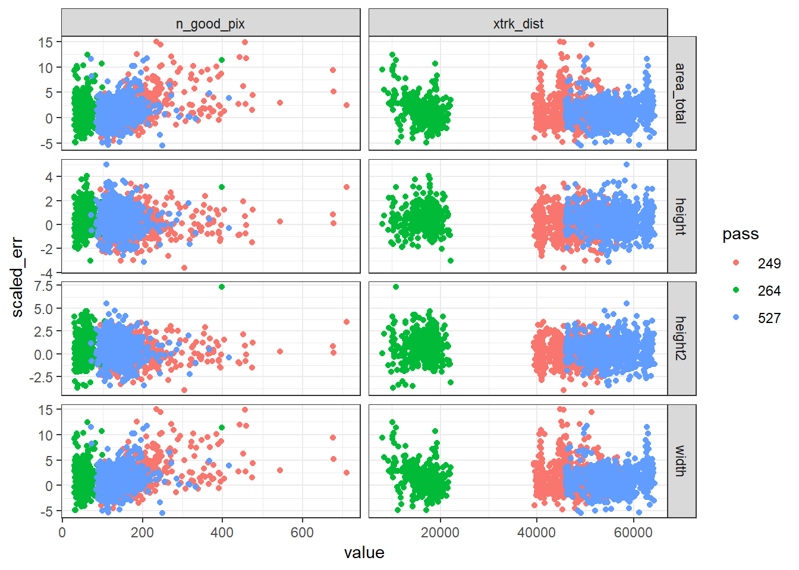

4 Results
The results are presented in 2 parts. Part 1 considers all validation data as a single set over which uncertainty estimates are evaluated. It seeks a simple yes/no answer to the question of whether predicted uncertainty matches empirical errors across the entire validation set. Phases 2 and separates results depending on variables such as uncertainty magnitude and feature size and seeks out relationships between these variables and error magnitude.
4.1 Node Results
Node variables validated include height, height2, width, and total area. The “height2” variable differs from “height” only in its uncertainty estimate (using a different method to estimate uncertainty).
The results in phase 1 are presented in 3 forms: Chi-square hypothesis tests of empirical variance, plots comparing theoretical to empirical distributions, and tables comparing theoretical to empirical statistics. Results at the node scale are presented in section ####; reach-scale results are presented in section ####.
4.1.1 Hypothesis tests
In the combined validation data from all 3 passes, 2-sided chi-square hypothesis tests rejected the null hypothesis (\(\sigma = \hat{\sigma}\)) for all node variables at a significance level of 0.05. Even when errors were bias-adjusted the results of the hypothesis test are the same (Table ####). This indicates that empirical variance was significantly different from modeled variance. However, the hypothesis test for height was only marginally significant (\(p = 0.035\) and \(0.043\) for non-adjusted and bias-adjusted, respectively), whereas all other variables had highly significant hypothesis tests (\(p < 10^{-6}\)).
| variable | teststat | df | pval | pval_debias |
|---|---|---|---|---|
| area_total | 14840.043 | 1877 | 0 | 0.0000e+00 |
| height | 2256.927 | 1877 | 0 | 3.7398e-03 |
| height2 | 3590.144 | 1877 | 0 | 0.0000e+00 |
| width | 14840.042 | 1877 | 0 | 0.0000e+00 |
Restricting the validation to include only the lower-flow conditions (days 110 and 119) gives a different result for height; here the test does not reject the null hypthesis \(\sigma = \hat{\sigma}\) at a significance level of 0.05 when bias is removed. All other variables have error variance that is again significantly different from the estimated variance.
| variable | teststat | df | pval | pval_debias |
|---|---|---|---|---|
| area_total | 8542.081 | 1179 | 0e+00 | 0.0000000 |
| height | 1439.903 | 1179 | 5e-07 | 0.3840719 |
| height2 | 2531.810 | 1179 | 0e+00 | 0.0000000 |
| width | 8542.081 | 1179 | 0e+00 | 0.0000000 |
4.1.2 Distribution plots
Histograms for node-level scaled errors (Fig. ####) illustrate the difference between the empirical (histogram) and theoretical (smooth curve) error distributions. Area and width (a nodewise constant scaling of area) have heavy upper tails, especially for the high-flow day 220, indicating a tendency to vastly overestimate node areas in some cases. Three of the worst overestimates (nodes 286, 301, and 360) are mapped below, and their aggregation of pixels compared to the validation truth in figure ####.

Normal quantile-quantile plots (Fig. ####) illustrate the deviation of emprical scaled errors from the theoretical \(N(0, 1)\) distribution (solid black line). While the height errors closely match the theoretical distribution for day 109, day 220 slightly but consistently overestimates large height errors, enough to cause the hypothesis test to reject the equality of theoretical and empirical variance. Height2 scaled errors are apparently Gaussian (falling on a straight line in the QQ plot), but have a larger variance than is predicted (slope of a line through the scaled errors is greater than 1). Width and area scaled errors diverge considerably from the theoretical distribution, and the behavior is markedly different between days 109 and 220. Both days’ scaled errors diverge from the theoretical \(N(0,1)\) line, but whereas Day 220 has a heavy upper tail, day 109 appears to be Gaussian, but with a larger variance than predicted.


4.1.3 Tables
Coverage rates for various confidence intervals (Table ####) again reflect the underestimation of variance in the uncertainty models. Only the 99% confidence interval for height contains the expected amount (99%) of the data; all other intervals contain less than the theoretical amount.
| ci68 | ci90 | ci95 | ci99 | |
|---|---|---|---|---|
| area_total | 34.3 | 55.1 | 61.1 | 73.7 |
| height | 65.5 | 87.1 | 93.2 | 97.8 |
| height2 | 53.7 | 77.6 | 85.8 | 93.7 |
| width | 34.3 | 55.1 | 61.1 | 73.7 |
Summary statistics (Table ####) indicate exactly by how much empirical statistics (bias, standard deviation, RMSE), differ from theoretical values (0, 1, and 1, respectively). Area and width \(\hat{\sigma}\)’s would need to be multiplied by a factor of 2.36 in order to match the theoretical variance (including bias), whereas \(\hat{\sigma}\) for height and height2 would require smaller adjustments.
| variable | bias | sd | rmse |
|---|---|---|---|
| area_total | 1.30 | 2.49 | 2.81 |
| height | 0.32 | 1.05 | 1.10 |
| height2 | 0.43 | 1.32 | 1.38 |
| width | 1.30 | 2.49 | 2.81 |
4.2 Reach results
| variable | teststat | df | pval | pval_debias |
|---|---|---|---|---|
| area_total | 8583.35 | 28 | 0.00 | 0.00 |
| height | 162.64 | 28 | 0.00 | 0.00 |
| slope | 36.74 | 28 | 0.25 | 0.41 |
| width | 9199.21 | 28 | 0.00 | 0.00 |
4.3 Part 2: Factors affecting errors and uncertainty
- Uncertainty estimates are a function of variables including
- number of pixels/nodes
- position in cross-track


